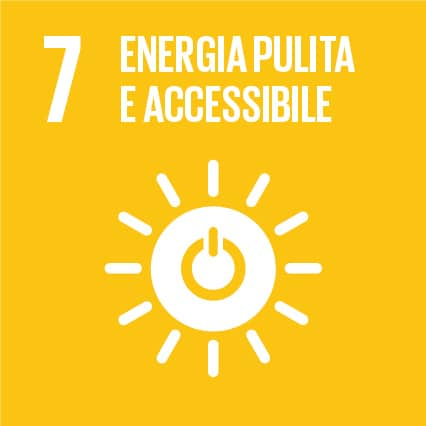
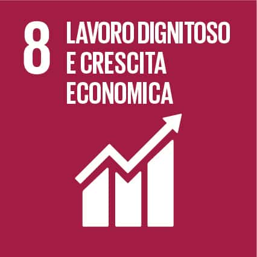
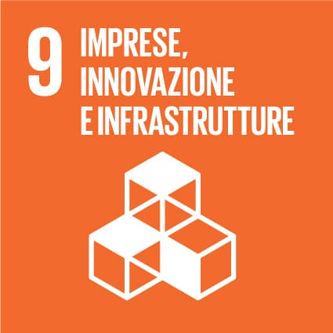
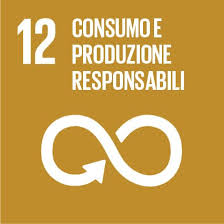
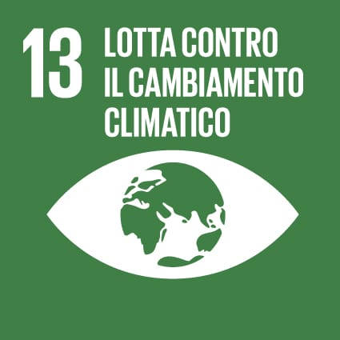

Lo sviluppo sostenibile è l'idea che il progresso non debba avvenire a scapito del futuro. Significa migliorare le condizioni di vita di oggi senza rovinare il pianeta e senza togliere opportunità alle generazioni che verranno. Per questo si parla di equilibrio tra economia, società e ambiente: se uno di questi aspetti viene trascurato, lo sviluppo non può dirsi davvero sostenibile.
Proprio per affrontare i grandi problemi del nostro tempo, nel 2015 l'ONU ha lanciato l'Agenda 2030, un insieme di obiettivi che tutti i Paesi sono chiamati a perseguire. Tra questi, alcuni sono particolarmente legati alla vita quotidiana e al modo in cui produciamo, lavoriamo e consumiamo.
L'Obiettivo 7 punta a garantire energia pulita e accessibile a tutti, favorendo l'uso delle fonti rinnovabili e riducendo l'inquinamento. L'Obiettivo 8 si concentra sull'importanza del lavoro: non solo creare occupazione, ma assicurare lavori dignitosi, sicuri e rispettosi delle persone. L'Obiettivo 9 evidenzia il ruolo dell'innovazione e delle infrastrutture moderne, fondamentali per uno sviluppo economico che sia efficiente ma anche sostenibile.
Un altro aspetto centrale è quello affrontato dall'Obiettivo 12, che invita a cambiare le nostre abitudini di consumo e produzione, riducendo gli sprechi e utilizzando le risorse in modo più responsabile. Tutto questo è strettamente collegato all'Obiettivo 13, che richiama l'urgenza di agire contro il cambiamento climatico, una delle sfide più grandi e attuali per l'umanità. In definitiva, lo sviluppo sostenibile non è solo una questione politica o economica, ma riguarda le scelte di tutti i giorni. Ognuno di noi, nel proprio piccolo, può contribuire a costruire un futuro più giusto, vivibile e rispettoso dell'ambiente.